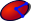
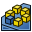

Der Arbeitsbereich PartDesign wurde im Releasewechsel 0.16 auf 0.17 grundlegend überarbeitet und erweitert. Insbesondere wurde die Struktur der Modelle für komplexere Konstruktionen angepasst.
Nutzer der Version 0.16 finden die dazu passenden Seiten in PartDesign Legacy
Die deutsche Übersetzung (0.17) ist aktuell in Arbeit.
Der Arbeitsbereich PartDesign stellt fortschrittliche Werkzeuge bereit für die Modellierung komplexer Teile basierend auf dem Featurebasierten Konstruieren. Er ist hauptsächlich für die Erstellung mechanischer Bauteile gedacht, aber nicht darauf beschränkt. Dabei wird intern der Arbeitsbereich Sketcher als Zeichenwerkzeug genutzt, der mit Hilfe der "eingeschränkten Geometrie" arbeitet.

Contents
Grundkonzepte
Featurebasiertes Konstruieren
Während der Arbeitsbereich Part und andere FreeCAD "Workbenches" Modelle aus der Kombination von 3D Primitiven erstellen, nutzt der Arbeitsbereich Part Design Formelemente (Features). Ein Feature ist eine formgebende Veränderung eines 3D Objekts via geometrischer Definition. Der Begriff "Feature" wird allgemein in 3D Systemanleitungen nicht übersetzt, Formelement ist eine Möglichkeit der Übersetzung, die hier manchmal verwendet wird.
Das erste Formelement in einem Körper (Body) wird allgemein als das "base feature" bezeichnet. Die weiteren Features bauen im allgemeinen auf Oberflächen oder definierten Flächen der bereits vorhandenen Features auf. Im Grunde spiegelt diese Vorgehensweise den Prozess der formgebenden mechanischen Bearbeitung wieder. Ein Rohteil wird durch Anschweißen, Bohren, Fräsen usw. Schritt für Schritt verändert. Jeder Arbeitsschritt entspricht einem neuen Formelement.
Alle Features sind in ihrem Ablauf im "Modell Baum" (Baumansicht) aufgelistet und können von dort aus zum Bearbeiten gewählt werden. Das letzte Feature repräsentiert das endgültige Teil dieses Modells (außer wenn eine abweichende "Spitze" definiert wurde).
Es gibt folgende Kategorien von Features:
- Profil-basierend: Diese Features beginnen mit einer im "Sketcher" erstellten Kontur, mit der Kontur einer vorhandenen Oberfläche (dabei wird ein Profil aus den vorhandenen Kanten gewonnen), einem ShapeBinder oder mit einem in den aktiven Körper (Body) eingefügten Objekt aus "Draft".
- Additive: Aufbauende Features fügen Material hinzu. Sie sind in gelben Icons dargestellt.
- Subtractive: Subtraktive (abtragende) Features nehmen Material vom Objekt weg. Deren Icons haben eine blaue Grundfarbe.
- Primitive: basieren auf elementaren geometrischen Grundkörpern (Quader, Zylinder, Konus, Torus ...). Diese können additiv oder subtraktiv sein.
- Transformation: Spiegeln, Lineares Muster, Polares Muster und Mehrfachtransformation vervielfachen vorhandene Features.
- Dress-up: Diese Features verändern per Parameter Kanten oder Flächen, darunter fallen Abrundungen, Fasen oder Formschrägen und Aufdickungen.
- Prozedural sind alle Features die nicht auf Umrissen basieren. Hierzu gehören "Dress-Up" und "Transformation" Features.
Body
Ein Body (Körper) ist ein Container, der eine Folge von Features enthält, die einen einzelnen zusammenhängenden Volumenkörper (solid) bilden.
Was versteht man unter einem einzelnen zusammenhängenden Volumenkörper (solid)? Er entspricht einem Objekt wie einem Gussteil, Drehteil oder Frästeil, welches aus einem einzigen Ursprungsblock oder festen Verbindungen wie Schweißen, Reibschweissen oder anderen auftragenden Methoden erstellt wurde. Sobald ein Objekt Verbinder wie Schrauben, Nieten oder andere lösbare Verbindungen enthält, ist dies kein zusammenhängender Körper. Ein zusammengesetzter Körper, wie z.B. ein Stuhl mit Armen, Beinen und Lehne, der zusammengeschraubt wird, würde aus mehreren Körpern erstellt werden.
In einem Freecad Dokument können viele Körper erstellt werden. Diese können auch verbunden werden, um wiederum einen neuen in sich geschlossenen Körper zu formen.
Wenn ein Modell aus mehreren Körpern (Bodies) besteht, zum Beispiel der genannte Stuhl, können diese als Part-Container zusammengefasst und miteinander im Raum bewegt werden.
Behandlung der Sichtbarkeit im Körper
Normalerweise repräsentiert das letzte Feature den Körper nach außen. Diese bezeichnet man auch als "Spitze" ("Tip"), analog zur "Spitze des Eisbergs". Der Rest des Eisbergs, also die anderen Features und Skizzen, Shapebinder etc. bleiben "unter der Wasserlinie" verborgen. Wird ein weiteres Feature hinzugefügt, verschiebt sich die Spitze dorthin. Die Spitze kann auch per Kontextmenu manuell auf ein vorheriges Feature festgelegt werden.
Innerhalb des Body kann immer nur ein Feature sichtbar sein. Die Sichtbarkeit wird im Modellbaum mit der Leertaste umgeschaltet.
Nullpunkt eines Körpers
Jeder Körper (Body) hat einen eigenes Koordinatensystem. Es besteht aus den Hauptebenen (XY, XZ, YZ) und den Achsen (X, Y, Z) die für die Erstellung von Skizzen und Features genutzt werden können. Sketche können direkt auf den Hauptebenen erstellt werden. Damit müssen die daraus resultierenden Features nicht mehr an vorhandene Flächen gebunden sein; damit erstellte Features wirken sich aber dennoch auf die bestehenden Objekte aus.
Objekte verschieben und umsortieren
Es ist möglich, die "Spitze" des Körpers vorübergehend neu zu definieren (Kontextmenue). Neue Features/Referenzen und Skizzen werden dann an dieser Stelle eingefügt. Features können auch umsortiert oder in andere Körper verschoben werden. Dies erfolgt über das Kontextmenue (rechte Maustaste). Das Verschieben kann bei bestimmten Abhängigkeiten untersagt sein, z.B. wenn ein Sketch an eine Fläche angeheftet ist. Wenn ein Sketch in einen anderen Body verschoben wird, dann sollte es keine externe Geometrie verwenden.
Referenzgeometrie
Referenzgeometrie enthält Punkte, Linien und Flächen (datum points, lines, planes) sowie extern verlinkte Formen (ShapeBinder). Diese können als Referenz für Skizzen und Features dienen. Die Definition erlaubt weitreichende Möglichkeiten für Offsets und Lage der Referenzobjekte.
Querverweise
Über Referenzelemente können Querverbindungen von Körper zu Körper erzeugt werden. So erlaubt z.B. die Formmappe (Shape Binder) Objekte teilweise oder ganz als Referenz über Körpergrenzen hinweg zu definieren. Als einfach Anwendung denke man sich einen genau auf ein Schachtel passenden Deckel. Dieser holt sich die Außenkanten der Schachtel via Formmappe in seinen Körper als Referenz. FreeCAD hilft ihnen dabei durch Rückfrage unzulässige Verlinkungen zu vermeiden.
Befestigung
Das Befestigungs Werkzeug findet sich als eigene Operation im Part-Arbeitsbereich, ist aber in PartDesign nicht als eigenes Werkzeug verfügbar, obwohl es dort intensiv genutzt wird, um Skizzen und Referenzgeometrien an die Hauptebenen oder Achsen anzuheften. Die vielfältigen Möglichkeiten, um Referenzgeometrien anzuheften, machen dieses Werkzeug besonders vielseitig.
Weitere Information findet man auf der Seite über Befestigung.
Allgemeine Hinweise zum Konstruieren stabiler Modelle
Hinter der parametrischen Modellierung steckt die Idee, dass nach der Änderung von Parametern wie Länge oder Durchmesser darauf aufbauende Geometrie automatisch richtig angepasst wird. Hierbei kann es vorkommen, dass grundlegende Änderungen in den Folgeschritten nicht mehr automatisch nachgezogen werden können; man sagt, "das Modell zerbricht" oder ist schlicht kaputt. Im Vergleich zu den vorherigen Versionen kann mit den neuen Möglichkeiten von Freecad 0.17 die Gefahr des Zerbrechens minimiert werden, wenn die folgenden Entwurfsprinzipien berücksichtigt werden:
- Allem voran sollten Skizzen nicht mehr an Flächen des vorherigen Feature angeheftet werden! Skizzen sollten künftig nur noch an die Standardflächen des Körpers oder auf Referenzflächen oder Formmappen (Shape Binder) angeheftet werden.
- Beim Erstellen von Referenzobjekten sollte man nicht auf die Topologie des Teilobjekts sondern auf die Standardflächen und -achsen sowie auf Skizzen Bezug nehmen.
- Nutzen Sie einen "Master-Skizze". Diese sollte einfach sein und die wesentlichen Elemente und deren Maße enthalten. Sie muss selbst keine Features definieren, stellt aber die Basis für die folgenden Features bereit. Sie kann, muss aber nicht die erste Skizze in einem Körper sein.
- Wenn es unvermeidbar ist, ein voriges Feature zu verwenden, z.B. wenn man auf eine bei einer Austragung erzeugte Fläche referenzieren muss, dann sollte man dies an der frühest möglichen Stelle in der Liste der Features tun, also dort, wo dieses Maß das erste mal auftritt. Ab Freecad 0.17 können externe Referenzen nicht mehr nur auf das letzte vorherige, sondern beliebige vorherige Elemente über die Referenzgeometrien zugreifen. Wenn man ein frühes Feature nutzt, können Änderungen an den dazwischen liegenden Features das Modell nicht zerbrechen. Nochmal gesagt, es ist immer besser Bezüge zu einer Skizze zu machen, als zu Ecken oder Kanten eines Volumenkörpers.
Die Werkzeuge
Die Part Design Werkzeuge befinden sich alle im Part Design-Menü und der PartDesign Werkzeugleiste. Sie erscheinen, wenn der Arbeitsbereich geladen wird.
strukturierende Werkzeuge
Mit diesen Werkzeugen kann der Modell-Baum organisiert werden.
-
 Part: fügt einen neuen Part-Container in das aktive Dokument ein und setzt ihn auf aktiv.
Part: fügt einen neuen Part-Container in das aktive Dokument ein und setzt ihn auf aktiv. -
 Gruppe: fügt eine Gruppe in den Modell-Baum des aktiven Dokuments ein.
Gruppe: fügt eine Gruppe in den Modell-Baum des aktiven Dokuments ein.
Part Design Hilfswerkzeuge
 Körper erstellen: Erstellt einen Körper (Body) und aktiviert diesen sofort.
Körper erstellen: Erstellt einen Körper (Body) und aktiviert diesen sofort.
 Skizze erstellen: Erstellt eine neue Skizze (Sketch) auf einer bereits gewählten Flächen oder Ebene. Wurde nichts vorher gewählt, fragt Freecad welche der Standardebenen zu wählen ist. Danach wird in den Arbeitsbereich Sketcher in den Editiermodus geschaltet.
Skizze erstellen: Erstellt eine neue Skizze (Sketch) auf einer bereits gewählten Flächen oder Ebene. Wurde nichts vorher gewählt, fragt Freecad welche der Standardebenen zu wählen ist. Danach wird in den Arbeitsbereich Sketcher in den Editiermodus geschaltet.
-
 Skizze bearbeiten: Editiere die gewählte Skizze.
Skizze bearbeiten: Editiere die gewählte Skizze.
-
 Eine Skizze einer Fläche zuordnen: Legt die Skizze auf eine zuvor ausgewählte Bezugsebene oder Fläche des aktiven Körpers.
Eine Skizze einer Fläche zuordnen: Legt die Skizze auf eine zuvor ausgewählte Bezugsebene oder Fläche des aktiven Körpers.
Part Design formgebende Werkzeuge
Referenzwerkzeuge
 Bezugspunkt erstellen: Erstellt einen Bezugspunkt im aktiven Körper.
Bezugspunkt erstellen: Erstellt einen Bezugspunkt im aktiven Körper.
 Bezugslinie erstellen: Erstellt eine Bezugslinie im aktiven Körper.
Bezugslinie erstellen: Erstellt eine Bezugslinie im aktiven Körper.
 Bezugsebene erstellen: Erstellt eine Bezugsebene im aktiven Körper
Bezugsebene erstellen: Erstellt eine Bezugsebene im aktiven Körper
 Bezugsobjekt erstellen: Erstellt ein Referenzobjekt im aktiven Körper
Bezugsobjekt erstellen: Erstellt ein Referenzobjekt im aktiven Körper
 Neuen Klon erstellen: Erstellt einen Klon des aktiven Körpers.
Neuen Klon erstellen: Erstellt einen Klon des aktiven Körpers.
Additive Formwerkzeuge
Dies sind die Werkzeuge um Basisfeatures oder andere Features zu erzeugen die Formen aufbauen.
-
 Block: Erstellt eine Aufpolsterung oder Austragung (PAD) aus der selektierten Skizze. Die Skizze muss eine oder mehrere geschlossene Konturen enthalten.
Block: Erstellt eine Aufpolsterung oder Austragung (PAD) aus der selektierten Skizze. Die Skizze muss eine oder mehrere geschlossene Konturen enthalten.
-
 Rotation: Erstellt einen Rotationskörper aus einer geschlossenen Kontur und einer Achse.
Rotation: Erstellt einen Rotationskörper aus einer geschlossenen Kontur und einer Achse.
 zu addierender Loft: Erstellt einen Übergang von einer Skizzen zu einer anderen. Optional können weitere Skizzen als Zwischenschritte angegeben werden.
zu addierender Loft: Erstellt einen Übergang von einer Skizzen zu einer anderen. Optional können weitere Skizzen als Zwischenschritte angegeben werden.
 zuzufügendes Rohr: Erstellt einen Körper aus einem oder mehreren Skizzen entlang eines geschlossenen oder offenen Pfads.
zuzufügendes Rohr: Erstellt einen Körper aus einem oder mehreren Skizzen entlang eines geschlossenen oder offenen Pfads.
- Erzeugen eines zusätzlichen geometrischen Körpers: Fügt dem Körper einen elementaren geometrischen Grundkörper hinzu.
 zu addierender Quader: Erstellt einen additiven Quader.
zu addierender Quader: Erstellt einen additiven Quader.
 zu addierender Kegel: Erstellt einen additiven Konus.
zu addierender Kegel: Erstellt einen additiven Konus.
 zu addierender Zylinder: Erstellt einen additiven Zylinder.
zu addierender Zylinder: Erstellt einen additiven Zylinder.
 zu addierendes Ellipsoid: Erstellt ein additives Ellipsoid.
zu addierendes Ellipsoid: Erstellt ein additives Ellipsoid.
 zu addierendes Prisma: Erstellt ein additives Prisma.
zu addierendes Prisma: Erstellt ein additives Prisma.
 zu addierende Kugel: Erstellt eine additive Kugel.
zu addierende Kugel: Erstellt eine additive Kugel.
 zu addierender Torus: Erstellt einen additiven Torus.
zu addierender Torus: Erstellt einen additiven Torus.
 zu addierender Keil: Erstellt einen additiven Keil.
zu addierender Keil: Erstellt einen additiven Keil.
Subtractive Formwerkzeuge
Diese Werkzeuge erstellen Features, die Material abtragen.
-
 Pocket: Erstellt eine Tasche (Vertiefung).
Pocket: Erstellt eine Tasche (Vertiefung).
-
 Loch: Erstellt ein (Bohr-)Loch aus einer Skizze mit mindestens einem Kreis in der Kontur.
Loch: Erstellt ein (Bohr-)Loch aus einer Skizze mit mindestens einem Kreis in der Kontur.
-
 Nut: Erstellt eine Nut aus dem Drehen einer Skizze um eine Achse.
Nut: Erstellt eine Nut aus dem Drehen einer Skizze um eine Achse.
 Subtraktive Ausformung: Erstellt einen Übergang von einer Skizze mit einer Kontur zu einer anderen Skizze mit einer Kontur, optional über eine oder mehrere Skizzen mit Kontur hinweg, und entfernt diesen aus dem Körper.
Subtraktive Ausformung: Erstellt einen Übergang von einer Skizze mit einer Kontur zu einer anderen Skizze mit einer Kontur, optional über eine oder mehrere Skizzen mit Kontur hinweg, und entfernt diesen aus dem Körper.
 Subtraktive Austragung: Erstellt einen Volumenkörper durch das Führen einer Skizze mit einer Kontur entlang eines Pfades, optional zu weiteren Skizzen mit Kontur, und entfernt diesen aus dem Körper.
Subtraktive Austragung: Erstellt einen Volumenkörper durch das Führen einer Skizze mit einer Kontur entlang eines Pfades, optional zu weiteren Skizzen mit Kontur, und entfernt diesen aus dem Körper.
- Erzeuge einen abzuziehenden Grundkörper: Fügt einen elementaren geometrischen Körper hinzu und entfernt dessen Form aus dem Modell.
 Subtractive box: Fügt einen Quader hinzu und entfernt dessen Form aus dem Körper.
Subtractive box: Fügt einen Quader hinzu und entfernt dessen Form aus dem Körper.
 Abzuziehender Kegel: Fügt eine subtraktiven Konus hinzu und entfernt dessen Form aus dem Körper.
Abzuziehender Kegel: Fügt eine subtraktiven Konus hinzu und entfernt dessen Form aus dem Körper.
- Abzuziehender Zylinder: Fügt einen subtraktiven Zylinder hinzu und entfernt dessen Form aus dem Körper.
{kind=link}
-  Abzuziehendes Ellipsoid: Fügt ein subtraktives Ellipsoid hinzu und entfernt dessen Form aus dem Körper.
{kind=link}
 Abzuziehendes Prisma: Fügt ein subtraktives Prisma hinzu und entfernt dessen Form aus dem Körper.
Abzuziehendes Prisma: Fügt ein subtraktives Prisma hinzu und entfernt dessen Form aus dem Körper.
 Abzuziehende Kugel: Fügt eine subtraktive Sphäre hinzu und entfernt deren Form aus dem Körper.
Abzuziehende Kugel: Fügt eine subtraktive Sphäre hinzu und entfernt deren Form aus dem Körper.
 Abzuziehender Torus: Fügt einen subtraktiven Torus hinzu und entfernt dessen Form aus dem Körper.
Abzuziehender Torus: Fügt einen subtraktiven Torus hinzu und entfernt dessen Form aus dem Körper.
 Abzuziehender Keil: Fügt einen subtraktiven Keil hinzu und entfernt dessen Form aus dem Körper..
Abzuziehender Keil: Fügt einen subtraktiven Keil hinzu und entfernt dessen Form aus dem Körper..
Transformationen
Diese Werkzeuge erlauben verschiedene Transformationen von Features. Sie können ein oder mehrere Features wählen.
-
 Spiegeln: Spiegelt ein oder mehrere Features auf einer Fläche.
Spiegeln: Spiegelt ein oder mehrere Features auf einer Fläche.
-
 Lineares Muster Erstellt ein lineares Muster von einem oder mehreren Features.
Lineares Muster Erstellt ein lineares Muster von einem oder mehreren Features.
-  Polare Muster: Erstellt ein Wiederholungsmuster aus einem oder mehreren Features auf einem Kreis.
{kind=link}
-
 Mehrfachtransformation erstellen: Erstellt ein Wiederholungsmmuster aus einer beliebigen Kombination der anderen Transformationen.
Mehrfachtransformation erstellen: Erstellt ein Wiederholungsmmuster aus einer beliebigen Kombination der anderen Transformationen.
Dress-up tools
Der Begriff wird hier unübersetzt verwendet. Er bedeutet so viel wie "herausputzen", "schick machen".
Diese Werkzeuge ermöglichen es, Kanten und Flächen nachzubearbeiten.
 Verrundung: Kanten abrunden
Verrundung: Kanten abrunden
 Fase: Kanten anfasen.
Fase: Kanten anfasen.
 Formschräge: Fügt Formschrägen mit frei wählbarem Winkel hinzu.
Formschräge: Fügt Formschrägen mit frei wählbarem Winkel hinzu.
 Dicke: Erstellt eine Aufdickung und öffnet gewählte Flächen.
Dicke: Erstellt eine Aufdickung und öffnet gewählte Flächen.
Boolesche Operationen
 Boolesche Operation: Erstellt eine Boolsche Operation aus einem oder mehreren importierten Bodies oder Klonen und führt dann eine Boolesche Operation aus.
Boolesche Operation: Erstellt eine Boolsche Operation aus einem oder mehreren importierten Bodies oder Klonen und führt dann eine Boolesche Operation aus.
Extras
Zusätzliche Funktionen im Part Design Menu:
- Migrieren: Migriert Dateien aus früheren Freecad Versionen in die 0.17 Struktur. Wenn es eine reine Feature-basierte Konstruktion ist, sollte die Migration im allgemeinen erfolgreich sein. Wenn die Datei gemischte Part/Part Design/Draft Objekte enthält, wird die Konvertierung vermutlich fehlschlagen.
-
 Shaft design wizard: Erstellt eine Welle aus einer Wertetabelle und erlaubt es Momente und Kräfte zu errechnen Die generierte Welle ist eine rotierte Kontur mit Skizze und kann editiert werden
Shaft design wizard: Erstellt eine Welle aus einer Wertetabelle und erlaubt es Momente und Kräfte zu errechnen Die generierte Welle ist eine rotierte Kontur mit Skizze und kann editiert werden
-
 Involute gear: Erstellt ein Zahnradprofil mit Evolventen aus Parametern, welches als Basis für ein PAD dienen kann.
Involute gear: Erstellt ein Zahnradprofil mit Evolventen aus Parametern, welches als Basis für ein PAD dienen kann.
 Set tip: Setzt die Spitze (Tip) des Bodies auf das gewählte Feature. Das ist das Feature, welches auch die Form enthält, die für den Body nach außen wirksam ist.
Set tip: Setzt die Spitze (Tip) des Bodies auf das gewählte Feature. Das ist das Feature, welches auch die Form enthält, die für den Body nach außen wirksam ist.
- Objekt in einen anderen Körper verschieben: Verschiebt die gewählte Skizze, Referenzgeometrie, Formmappe oder Feature in einen anderen Körper.
- Objekt nach einem anderen Objekt verschieben: Erlaubt es, ein Feature, Referenzobjekt oder eine Skizze an eine andere Stelle in der Liste der Features zu verschieben.
Preferences
 Preferences...: Preferences disposable in PartDesign Tools.
Preferences...: Preferences disposable in PartDesign Tools.
Tutorien
Die Tutorien müssen neu gemacht und an 0.17 angepasst werden. Viele Elemente, besonders innerhalb des Skizzierers (Sketcher) sind aber noch gültig.
- PartDesign Bearingholder Tutorial I (needs updating)
- PartDesign Bearingholder Tutorial II (needs updating)
- PartDesign tutorial (needs updating)
- Basic Part Design Tutorial (needs updating)
Links
- What's new in PartDesign Next
- Updated PartDesign workflow
- FC v0.17dev: Part Design Next Usecases and Best practices
- Sandbox:Part Design Next